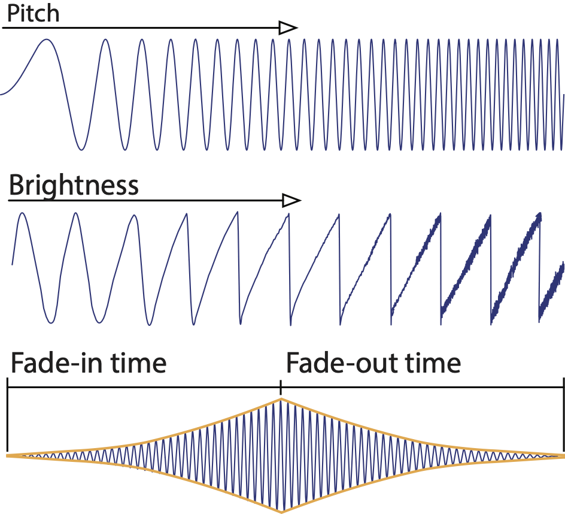
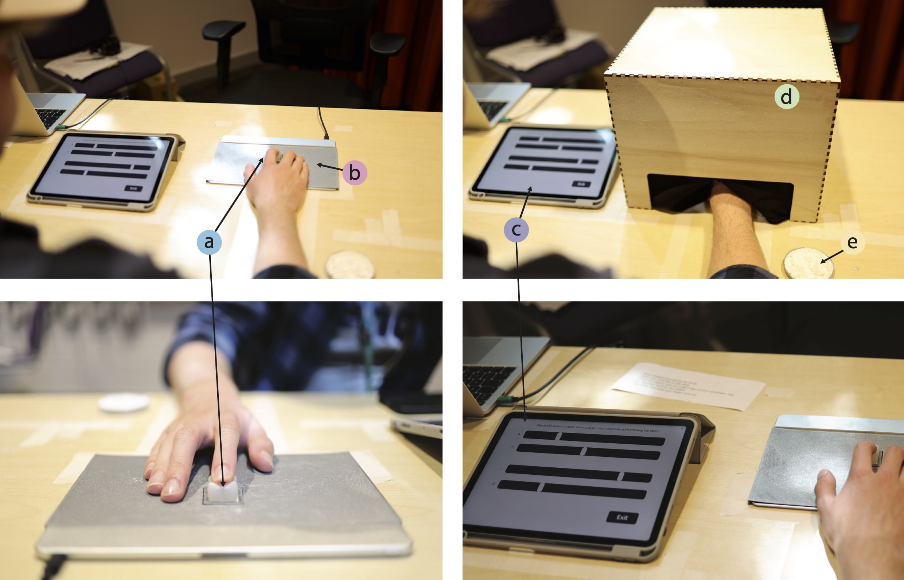

Computing interfaces are becoming increasingly sophisticated, with systems that engage multiple sensory channels simultaneously. Deformable and shape-changing interfaces offer rich tactile experiences, but there is limited understanding of how they can be combined with other modes of sensory feedback.
We systematically explored the audio, visual and tactile cross-modal correspondences of deformable shapes with a particular focus on auditory feedback. 50 participants were asked to associate deformable tactile stimuli — varying in stiffness and shape — with the sound qualities of pitch, brightness, fade-in time and fade-out time, under visuo-tactile and tactile-only conditions.
Our findings provide the first insights on how shape (both its form and visibility) plays a significant role in associations for pitch and brightness, and how stiffness plays a dominant role in associations over a sound's fade-in and fade-out times. These findings are distilled into the first design guidelines for integrating auditory feedback into physical interfaces.
Published at ACM DIS 2025


